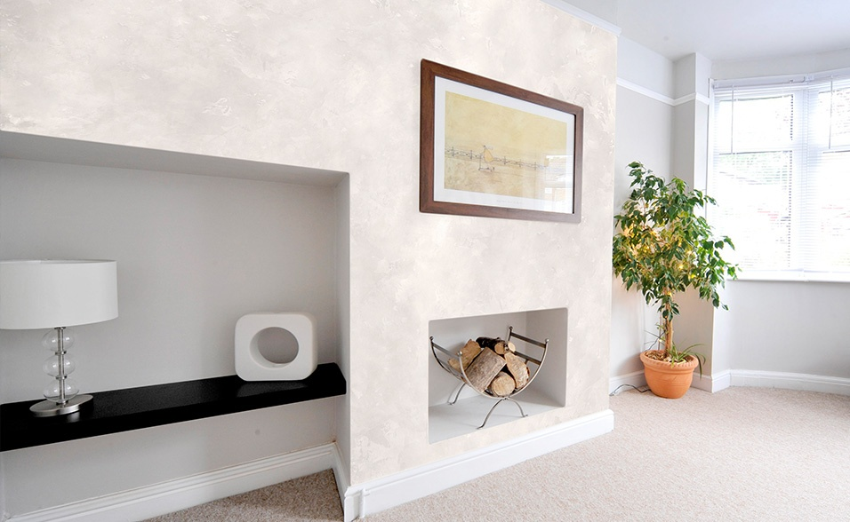

RIMINI · МоскваДекоративные покрытия.
Декоративные покрытия.
Для вашего интерьера.
Краски, венецианская и фактурная штукатурка. Подберите оттенок и эффект для стен в салоне RIMINI в Москве.
Выбрать покрытие
ПРИМЕРЫ РЕШЕНИЙРассмотрите фактуру.
Рассмотрите фактуру.
Выберите оттенок.
Гладкие и рельефные покрытия, спокойные цвета и выразительные эффекты. Сравните материалы и обсудите подходящий вариант отделки.
Выбрать покрытие